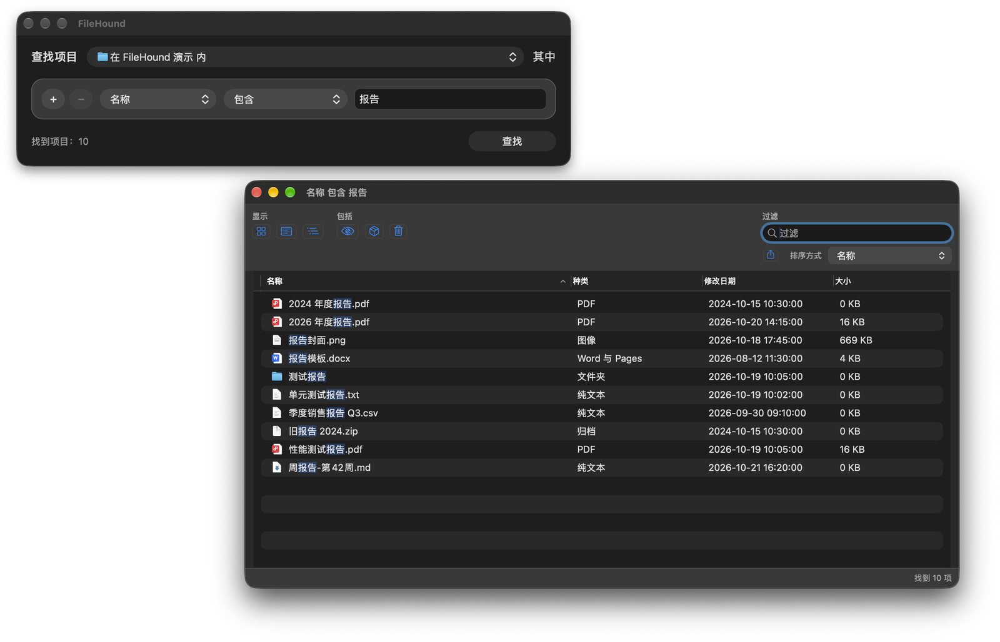

不建索引的 macOS 文件搜索工具。每次直接搜索磁盘，找到 Spotlight 找不到的文件：系统目录、隐藏文件、包内容，一个不漏。 An index-free file search tool for macOS. It searches the disk directly every time and finds what Spotlight misses — system folders, hidden files and package contents.

⌘N 另开查找窗口，各窗口的条件和结果互不影响；全局快捷键随时唤起。Press ⌘N for another search window with its own rules and results, or summon one anytime with a global shortcut.
批量列目录、多线程遍历、内核直接扫描卷目录、廉价条件先判、内容按字节预筛。Bulk directory listing, multithreaded traversal, kernel-level volume catalog search, cheap rules first and byte-level content prefiltering.
| 场景Scenario | 对比对象Baseline | FileHound |
|---|---|---|
/System/Library（约 46 万个条目）按名称搜索Name search in /System/Library (~458K items) |
find -iname 11.81 s |
1.52 s · 7.7× |
| 整个启动卷（约 707 万个对象）按名称搜索Name search across the startup volume (~7.07M objects) | 多线程遍历Multithreaded walk 48.49 s | 31.89 s · 1.5× |
| macOS SDK Frameworks（约 1.3 万个条目）按内容搜索Content search in the macOS SDK Frameworks (~13K items) | grep -rlF 3.51 s |
0.36 s · 9.7× |
测于 Apple M2 Max、32 GB 内存、macOS 27.2，热缓存下取 3 次中位数，测的是搜索引擎核心。Measured on Apple M2 Max, 32 GB RAM, macOS 27.2 with warm caches, median of 3 runs, search engine core only.
不确定芯片类型？打开「苹果菜单 › 关于本机」，看“芯片”或“处理器”一栏。Not sure which chip you have? Open › About This Mac and check “Chip” or “Processor”.
/private/var/root）时，在「权限」页安装特权辅助程序，并在「系统设置 › 通用 › 登录项」中允许。To search root-only locations such as /private/var/root, install the privileged helper from the Permissions pane and allow it in System Settings › General › Login Items.